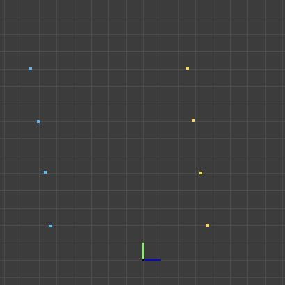

Vis¶
What is Vis?¶
We have visualization types Vis2d and Vis3d. Vis2d is a 2D visualization tool that can be used to visualize 2D data. Vis3d is a 3D visualization tool that can be used to visualize 3D data. They help us to visualize the data in a better way.
